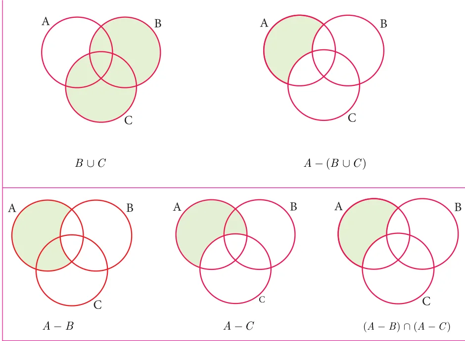
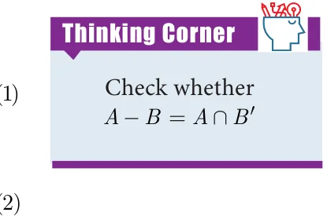
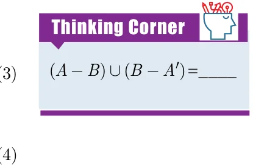
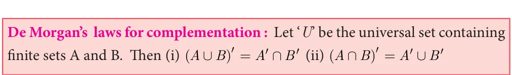
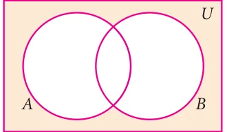
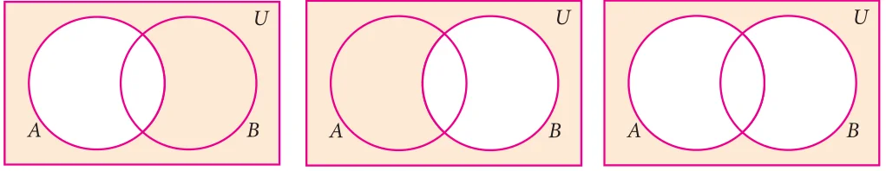
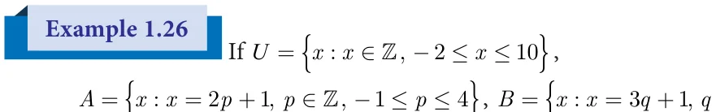
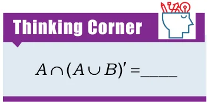

Augustus De Morgan \((1806 - 1871)\) was a British mathematician.

He was born on 27 June 1806 in Madurai, Tamilnadu, India. His father was posted in India by the East India Company. When he was seven months old, his family moved back to England. De Morgan was educated at Trinity College, Cambridge, London. He formulated laws for set difference and complementation. These are called De Morgan’s laws.
th
1.7.1 De Morgan’s Laws for Set Difference
These laws relate the set operations union, intersection and set difference.
Let us consider three sets A, B and C as \(A =\) { \(- - 5\), 2 1 3, , }, \(B =\) { \(- - 3\), 2,0,3,5} and
\(C =\) { \(- - 2\), 1 0, ,4,5}.
Now, B ÈC \(= {-3,-2,-1 0\), ,3,4,5}
\(A -\) (B \(\cup\) C) = { \(- 5 1\), } ... (1)
Then, \(A - B = {-5 1\), }and \(A - C =\) { \(- 5 1 3\), , }
(A - B) \(\cup\) (A - C) = { \(- 5 1 3\), , } ... (2) (A - B) \(\cap\) (A - C) = { \(- 5 1\), } ... (3)
From (1) and (2), we see that
\(A -\) (B \(\cup\) C) \(\ne\) (A - B) \(\cup\) (A - C)

But note that from (1) and (3), we see that
\(A -\) (B \(\cup\) C) = (A - B) \(\cap\) (A - C)
Now, B ÇC = { \(- 2,0,5}\)
\(A -\) (B \(\cap\) C) \(={ - 5 1 3\), , } ... (4)
From (3) and (4) we see that
\(A -\) (B \(\cap\) C) \(\ne\) (A - B) \(\cap\) (A - C)
But note that from (2) and (4), we get \(A -\) (B \(\cap\) C) = (A - B) \(\cup\) (A - C)


Verify \(A -\) (B \(\cup\) C) = (A - B) \(\cap\) (A - C) using Venn diagrams.
Solution

From (1) and (2), we get \(A -\) (B \(\cup\) C) = (A - B) \(\cap\) (A - C). Hence it is verified.
If \(P =\) {x : xÎ W and \(0 < x < 10}\), \(Q =\) {x : \(x = 2n+1\), nÎ W and n<5}
and = { , , ,7 11 13, , }, then verify \(P -\) (Q \(\cap\) R) = (P - Q) \(\cup\) (P - R)
Solution The roster form of sets P, Q and R are
\(P = {1 2\), ,3,4,5,6,7,8,9}, \(Q = {1 3\), ,5,7,9}
Finding the elements of set Q and \(R = {2,3,5,7 11 13\), , } Given, \(x = 2n + 1\)
\(n = 0 \to x = 2(0) +1 = 0 +1 = 1\)
First, we find (Q Ç R) \(= {3,5,7} n = 1 \to x = 2 1(\) ) \(+1 = 2 +1 = 3\)
Then, \(P -\) (Q \(\cap\) R) \(= {1 2\), ,4,6,8,9} ... \((1) n = 2 \to x = 2 2(\) ) \(+1 = 4 +1 = 5 n = 3 \to x = 2(3) +1 = 6 +1 = 7\)
Next, \(P - Q = {2,4,6,8}\) and \(n = 4 \to x = 2(4) +1 = 8 +1 = 9\)
\(P - R = {1 4\), ,6,8,9} Therefore, x takes values such as and so, (P - Q) \(\cup\) (P - R) \(= {1 2\), ,4,6,8,9} ... (2) 1, 3, 5, 7 and 9. Hence from (1) and (2), it is verified that \(P -\) (Q \(\cap\) R) = (P - Q) \(\cup\) (P - R).
1.7.2 De Morgan’s Laws for Complementation
These laws relate the set operations on union, intersection and complementation. Let us consider universal set U={0,1,2,3,4,5,6}, A={1,3,5} and B={0,3,4,5}.

Now, A È \(B = {0 1 3\), , ,4,5}
Then, (A \(\cup\) B) ' \(= {2,6}\) .....( )
Next, A¢ \(= {0 2\), ,4,6} and B¢ = { ,1 2,6}
Then, A ' \(\cap B\) ' \(= {2,6}\) .....( )
From (1) and (2), we get (A \(\cup\) B) ' \(= A\) ' \(\cap B\) '

Also, \(A \cap B = {3,5}\),
(A \(\cap\) B) ' \(= {0 1 2\), , ,4,6} .....( )
A ' \(= {0 2\), ,4,6} andB ' \(= {1 2\), ,6} A ' \(\cup B\) ' \(= {0 1 2\), , ,4,6} .....( )
From (3) and (4), we get ( \(\cap\) ) ' = ' \(\cup\) '

Verify (A \(\cup\) B) ' \(= A\) ' \(\cap B\) ' using Venn diagrams.
Solution


A È B (A \(\cup\) B) '

¢ ¢ ' \(\cap\) '
From (1) and (2), it is verified that ( \(\cup\) ) ' = ' \(\cap\) '

If = { : \(\in\) , \(- \le \le\) },
= { : \(= +\) , \(\in\) , \(- \le \le\) }, = { : \(= +\) , \(\in\) , \(- 1 \le q < 4}\),
verify De Morgan’s laws for complementation.

Solution
Given \(U =\) { \(- - 2\), 1 0 1 2, , , ,3,4,5,6,7,8,9 10, },
\(A =\) { \(- 1 1 3\), , ,5,7,9} and \(B =\) { \(- 2 1 4\), , ,7 10, }
Law (i) (A \(\cup\) B) ' =A ' \(\cap B\) '
Now, A È \(B = {-2,-1 1 3\), , ,4,5,7,9 10, }
(A \(\cup\) B) ' \(= {0 2\), ,6,8} ..... (1)
Then, A¢ \(= {-2,0 2\), ,4,6,8 10, } and B¢ \(= {-1 0 2\), , ,3,5,6,8,9}
A ' \(\cap B\) ' \(= {0 2\), ,6,8} ..... ( )

From (1) and (2), it is verified that (A \(\cup\) B) ' \(= A\) ' \(\cap B\) '
Law (ii) (A \(\cap\) B) ' \(= A\) ' \(\cup B\) '
Now, A Ç \(B =\) { ,1 7}
(A \(\cap\) B) ' \(= {-2,-1 0 2\), , ,3,4,5,6,8,9 10, } ..... (3)
Then, A ' \(\cup B\) ' \(= {-2,-1 0 2\), , ,3,4,5,6,8,9 10, } ..... (4)
From (3) and (4), it is verified that (A \(\cap\) B) ' \(= A\) ' \(\cup B\) '